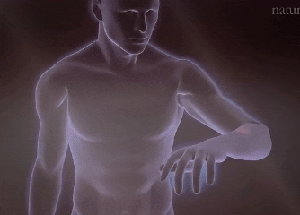
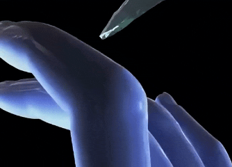

جواب
در سال 1896 میلادی ماکس فون فرای عصب شناس آلمانی
برای نخستین بار کشف میکنه که پوست انسان دارای گیرنده های اختصاصی درده
او نشان داد که برخی نقاط پوست نسبت به درد واکنش نشون دارند نه لمس یا گرما این اولین نشانه از این بود که درد در پوست متمرکزه نه در اعماق یا مغز
جوزف ارلانگر و هربرت گسر در سال 1994 میلادی در تحقیقات خود کشف کردند که
فیبر های عصبی انسان به انواع مختلف تقسیم می شود برخی از این فیبر ها ویژه انتقال درد اند

که فقط در پوست هستند آنها به خاطر این کشف بنیادین برنده جایزه نوبل پزشکی شدن
دیوید جولیوس عصب شناس آمریکایی
در سال 2021 با کشف گیرنده درد (تی ار پی وی وان) در پوست ثابت کرد که سلول های خاصی در برابر گرما یا مواد تند درد رو به مغز منتقل می کند
این گیرنده ها فقط در لایه های سطحی پوست فعال هستن او نیز بخاطر این کشف علمی بزرگ برنده جایزه نوبل پزشکی شد
همچنین پاتریک وال پزشک و عصب شناس برجسته بریتانیایی در کتاب معروف خودش به نام درد و علم رنج کشیدن میگه :
درد مستقیما از پوست سرچشمه می گیره اگه پوست کاملا بسوزه مثلا در سوختگی درجه 3 گیرنده های درد نابود میشن و بدون اون گیرنده ها هیچ دردی حس نمیشه حتی اگر آسیب شدید باشه برای تداوم درد پوست جدید با گیرنده های سالم باید جایگزین بشن
در زمانی که بشر هیچ دانشی از اعصاب و گیرنده های درد و یا فیزیولوژی پوست نداشت قرآن دقیقا به نقش پوست در انتقال درد اشاره میکنه نه تنها اشاره میکنه که پوست میسوزه بلکه در آیه 56
سوره نساء تسریح می کند که برای ادامه حس عذاب باید پوست جدید جایگزین شود
این نکته تا سیزده قرن بعد از قرآن حتی تصور هم نمیشد
بیان علمی و خارق العاده کتابی که در دل بیابان های عربستان در قرن ششم میلادی نازل شد
حقیقتی که 1400 سال بعد دانشمندان به کمک میکروسکوپ با آزمایش های پیشرفته از آن مطلع شدن
نکات تکمیلی
- جمعبندی: قرآن در آیه ۵۶ سوره نساء میگوید برای تداوم عذاب باید پوستهای تازه جایگزین شوند. امروز علوم اعصاب نشان دادهاند که گیرندههای درد در لایههای سطحی پوست قرار دارند و با سوختگی شدید از بین میروند. بدون پوست تازه، درد حس نمیشود. این تطابق میان متن قرآنی و یافتههای علمی، شگفتانگیز است.
- نکته علمی: تحقیقات جدید در نوروساینس نشان میدهد که انتقال درد نه تنها به پوست وابسته است، بلکه شبکه پیچیدهای از پروتئینها (مانند TRPV1 و Piezo2) در سلولهای پوستی نقش اصلی را دارند. کشف این مکانیسمها، که برنده جایزه نوبل پزشکی ۲۰۲۱ شدند، دقیقاً همان چیزی است که آیه به زبان ساده بیان کرده: پوست محل آغاز درد است.
- نکته مقایسهای: اگر همین عبارت «پوست را میسوزانیم و پوست تازه میآوریم تا عذاب را بچشند» در کتابی غیردینی نوشته میشد، بسیاری آن را «پیشبینی علمی عجیب» میدانستند. پس منطقی نیست وقتی این جمله در قرآن آمده، بهجای تحسین علمی، برچسب منفی بزنیم. قضاوت منصفانه یعنی معیار واحد برای همه متون، چه دینی و چه غیردینی.
- نکته فلسفی: نقش پوست در تجربه درد، فقط جنبه زیستی ندارد. روانشناسان تکاملی میگویند درد یک «زبان بقا» است؛ و پوست به عنوان خط مقدم ارتباط بدن با محیط، مهمترین واسطه این زبان است. این نشان میدهد که تاکید قرآن روی پوست، نگاه سطحی نیست بلکه به ریشه تجربه انسانی اشاره میکند.
- یادآوری: پیام اصلی آیه فقط عذاب اخروی نیست، بلکه بیانگر آگاهی از مکانیزم بدن انسان در سطحی است که قرنها بعد فهمیده شد. این خودش نشانهای است برای کسانی که در جستجوی پیوند میان ایمان و علماند.